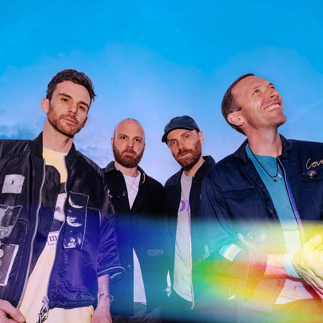

Coldplay
Years Active: 1997–present
Genre/s: Alternative rock, pop rock, post-Britpop, pop
Label/s: Fierce Panda, Parlophone, Nettwerk, Capitol, Atlantic
Members: Chris Martin, Jonny Buckland, Guy Berryman, Will Champion, Phil Harvey
Coldplay are a British rock band formed in London in 1997. They consist of vocalist and pianist Chris Martin, guitarist Jonny Buckland, bassist Guy Berryman and drummer Will Champion; manager Phil Harvey is also credited as a full member. The group are best known for their live performances and have had a significant impact on popular culture.
Coldplay initially went by the names Big Fat Noises and Starfish. Following the independent release of the EP Safety (1998), the band signed a record deal with Parlophone in 1999 and issued their debut album, Parachutes (2000), which included the breakthrough single "Yellow"; the album won a Brit Award for British Album of the Year and a Grammy Award for Best Alternative Music Album. The follow-up, A Rush of Blood to the Head (2002), earned the same accolades. X&Y (2005) concluded what Coldplay viewed as a trilogy, and their fourth album, Viva la Vida or Death and All His Friends (2008), won a Grammy Award for Best Rock Album; both releases topped the charts in over 30 countries, becoming the best-sellers of their respective years worldwide. Viva la Vida's title track was the first song by a British act to reach number one in the United States and United Kingdom simultaneously in the 21st century.
The albums Mylo Xyloto (2011), Ghost Stories (2014), A Head Full of Dreams (2015), Everyday Life (2019), Music of the Spheres (2021) and Moon Music (2024) drew from genres such as electronica, R&B, ambient, disco, funk, gospel, blues and progressive rock. Music of the Spheres included the single "My Universe", which was the first song by a British group to debut at number one on the Billboard Hot 100, and the band's Music of the Spheres World Tour is the most-attended and second-highest-grossing tour of all time, becoming the first by a band to gross $1 billion. A documentary, Coldplay: A Head Full of Dreams, was released in 2018 for Coldplay's 20th anniversary. In 2023, they featured on the inaugural Time 100 Climate list.
With over 160 million records sold worldwide, Coldplay are one of the best-selling music acts of all time. They are also the first group in Spotify history to reach 100 million monthly listeners. Fuse listed them among the most awarded artists, which includes the record for most Brit Awards won by a band. In the United Kingdom, they have three of the 50 best-selling albums, the most UK Albums Chart number ones without missing the top (10), and are the most played group of the 21st century on British media. The British Phonographic Industry called them one of the world's most "influential and pioneering acts", while the Rock and Roll Hall of Fame added A Rush of Blood to the Head to the 200 Definitive Albums list and "Yellow" to the Songs That Shaped Rock and Roll exhibit. Coldplay are involved in philanthropy, politics and activism, supporting numerous humanitarian projects and donating 10% of their profits to charity. Despite their popularity, they are considered polarising cultural icons.